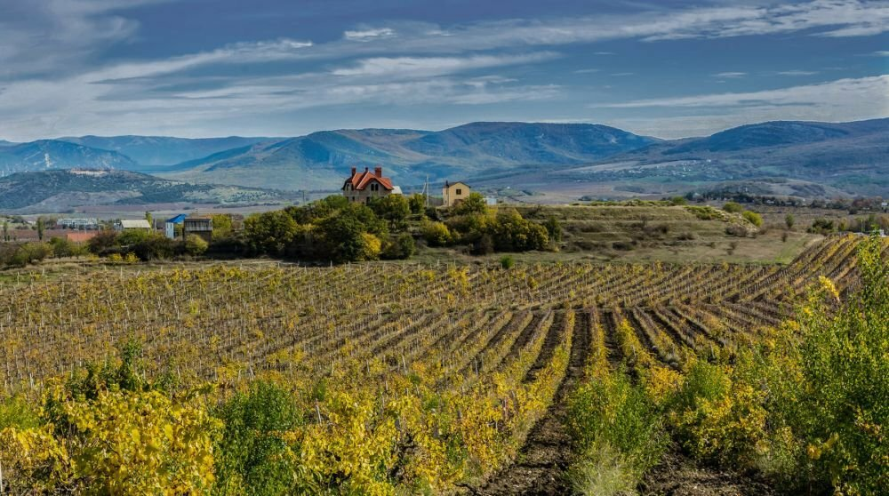
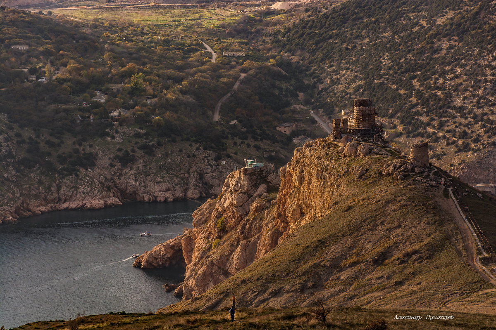
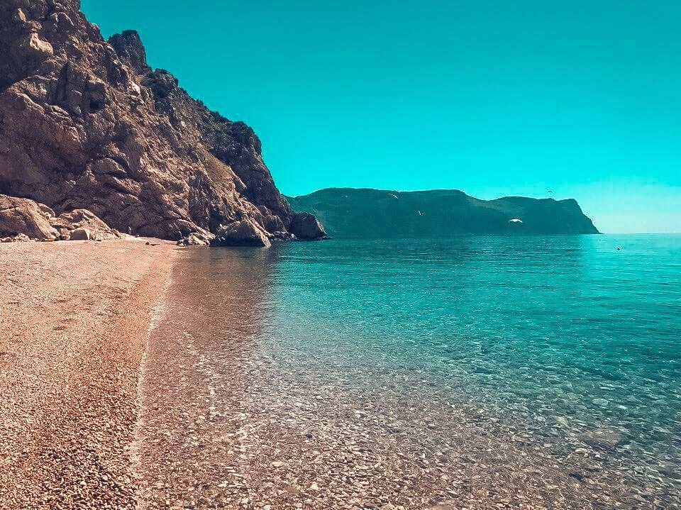
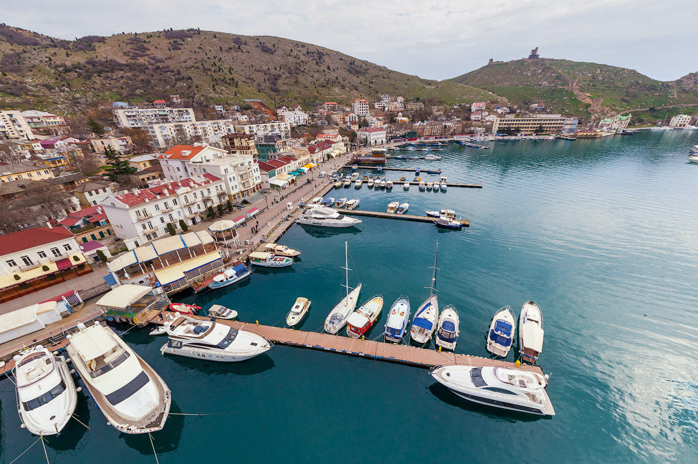
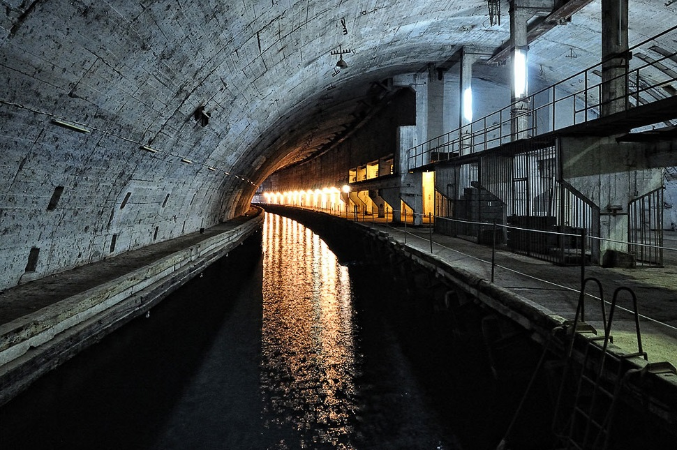
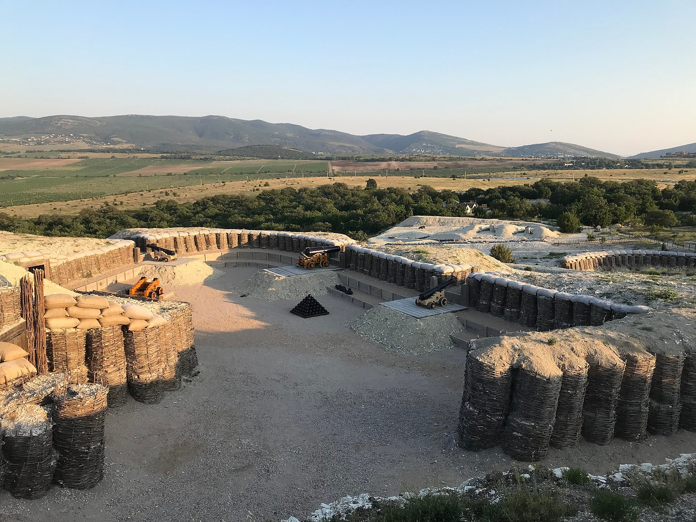
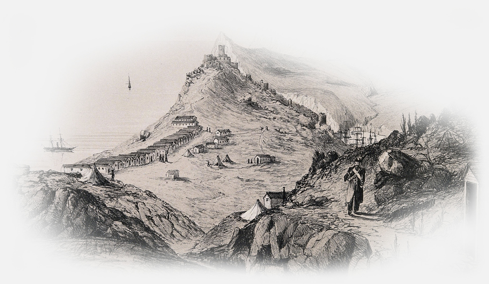

Short story of this beautiful place
First of all: Balaklava is a settlement on the Crimean Peninsula and part of the city of Sevastopol. Balaklava has changed possession several times during its history. A settlement at its present location was founded under the name of Symbolon (Σύμβολον) by the Ancient Greeks, for whom it was an important commercial city.
Middle Ages: During the Middle Ages, it was controlled by the Byzantine Empire and then by the Genoese who conquered it in 1365. The Byzantines called the town Yamboli and the Genoese named it Cembalo. In 1475, Cembalo City was conquered by the Turks and was subsequently renamed Balyk-Yuva (Fish's Nest) which then became Balaklava.
Crimean war and after: The town became famous for the Battle of Balaclava during the Crimean War thanks to the suicidal Charge of the Light Brigade, a British cavalry charge due to a misunderstanding sent up a valley strongly held on three sides by the Russians, in which about 250 men were killed or wounded, and over 400 horses lost, effectively reducing the size of the mounted brigade by two thirds and destroying some of the finest light cavalry in the world to no military purpose. The British poet Alfred, Lord Tennyson immortalized the battle in verse in his Charge of the Light Brigade. The balaclava, a tight knitted garment covering the whole head and neck with holes for the eyes and mouth, also takes its name from this settlement, where soldiers first wore them. Also numerous towns founded in English-speaking countries in later parts of the 19th Century were named "Balaklava". In 1954 Balaklava, together with the whole Crimea, passed from Russia to Ukraine. In 1957 it was formally incorporated into the municipal borders of Sevastopol by the Soviet government and lost city status. It became part of the independent state of Ukraine in 1991. Today there are over 50 monuments in the town dedicated to the remembrance of military valor in past wars, including the Great Patriotic War, the Crimean War and the Russian Civil War.
Places to visit
of course it's author's opinion
-

Terroir
Grapevines that grows at Balaklava terroir especially good for making champagne.
-

Cembalo fortress
Fortress was build it 14th century by genoese to protect the bay.
-

Beaches
There are a several beaches around Balaklava bay. All of them are very popular because of their perfect viewpoints
-

Balaclava's marina
Because of the good landscape and long bay, Balaclava is very popular as a yacht marina.
-

Submarine's base
One of the most popular tourist attractions in Balaclava. But it have never been used for military purpouse.
-

Fedukhin's high
A large historical park dedicated to Crimean war.
Video of Balaclava
Beauty 4k views
And a little bit advice:
Most of the tourists visits only submarines base, and a few of them climbing to Cembalo fortress. But sunrises and sunsets above the Balaclava one of the most imressive landmarks in Crimea. And of course you shold rent a boat or a yacht. If you will be a specially lucky you have a chance to swim with the dolphins.
The Balaclava Battle
nice story to read
Read more → History points
from antiquity until nowadays
-
5th century BC
First greek settlement apears at the bay.
-
1365
Balaclava becomes a genoese port.
-
1475
Cembalo City was conquered by the Turks.
-
1784
Crimea was definitively annexed by the Russian Empire.
-
1787
In 1787 the city was visited by Catherine the Great.
-
1854
The Battle of Balaclava.
-
1942-1944
During Second World War Balaclava was ocuupied by the nazi.
-
2014
Balaclava was attached(occupied) to a Russia with the other Crimea.
Сhampaneria "Zolotaya Balka"
The picturesque valley "Zolotaya Balka" stretches over 2,700 hectares of land in the Balaklava district, at the junction of the Crimean mountains, the Black Sea and the boundless steppe. Our winery of the same name is also located here. Zolotaya Balka is one of the largest wineries in Crimea and Sevastopol, whose history begins in 1889, when the first wine cellars were laid in the Balaklava Valley by A.Y. Witmer. Today, Zolotaya Balka produces wine using the most modern European equipment exclusively from its own grapes grown on one of the best terroirs of the Crimea.
Amazing night-views
Imagine. Night, fire, sky full of stars and sea breeze - night at Balaclava is the magnifecent time.